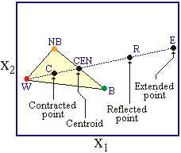

Optimization
Optimization
Introduction
In economics we often find our selves needing to maximize some objective function
i.e. solve a problem of the form \[ \max_{\mathbf x} f(\mathbf x) \] subject to \[\begin{align*} g_i(\mathbf x)&\leq 0\\ r_j(\mathbf x)&= 0 \end{align*}\]
Well begin by looking at \[ \min_{\mathbf x} f(\mathbf x) \]
Isomorphism
Start with the standard minimization problem \[ \min_{\mathbf x} f(\mathbf x) \]
If concave, this is isomorphic to the root-solving problem \[ \nabla f(\mathbf x) = 0 \]
The multivariate root-finding problem \[ g^i(\mathbf x) = 0 \] can be recast as \[ \min_{\mathbf x} \sum_i g^i(\mathbf x)^2 \]
Basic Concepts
All methods: Search the space of feasible choices by generating a sequence of guesses that (hopefully) converges to a solution.
Essentially two types:
- Comparison Methods: Compute objective at valious points, find the one which gives smallest value
- Gradient Based Methods: Use information on the slope (and possibly hessian!)
All these methods will find local minima.
- Not a problem if you minimization problem is convex
If not, need multiple initializations to be sure a global minimum is found
- Note: can do this after value function has converged if used in dynamic optimzation.
How to Choose an Algorithm
Speed: Optimization is likely goiong to be in the innermost loop
Want a fast algorithm: i.e. minimizes number of function evaluations
Gradient Based methods generally involve fewer evaluations
Robustness to Nonsmoothness: If you objective function is not smooth gradient based methods will have difficulty, can get stuck
- Comparison methods are generally better behaved
Robustness to starting parameters: Gradient based are also more likely to find different local minima at different starting values
- Stochastic comparison methods (like simulated annealing) are more likely to find global minima
Bracketing Method
Similar to Brent root search algorithm
Most reliable method for one dimensional problems
Guaranteed to find local minima for continuous functions
Initialization: Choose triple \((a,b,c)\) such that \(a<b<c\) and \(f(a),f(c) >f(b)\)
- Note this implies there must be a local minima in \([a,c]\)
Choose \(d\in(a,b)\)
If \(f(d) > f(b)\) then there is a minima in \([d,c]\) choose new triple \((d,b,c)\)
If \(f(d) < f(b)\) then there is a minima in \([a,b]\) choose new triple \((a,d,b)\)
Update the triple \((a,b,c)\) to the new one in previous step
Stop if \(c-a <\delta\)
Golden Search provides optimal way to choose \(b,d\)
Example function

Using Optim Univariate
-0.749999994377939-0.49999998939347085Brent’s Method
An alternative to choosing \(d\) through golden search
Construct a quadratic polynomial that fits values for points \((a,b,c)\)
Let \(d\) be the point that minimizes that polynomial
- Use criteria from above to choose new tuple \((d,b,c)\) or \((a,d,c)\)
Can lead to significantly faster convergence
optimize(f_univ,-2.0,1.0,Brent()) #run once to precompile
@time res = optimize(f_univ,-2.0,1.0,Brent());0.000003 seconds (2 allocations: 176 bytes)0.000004 seconds (2 allocations: 176 bytes)Multivariate Optimization
Simplex Methods
- This provides a algorithm to extend derivative free methods to \(n\) dimensions
- Start with \(n+1\) points \(\mathbf x_1,\mathbf x_2,\ldots,\mathbf x_{n+1}\)
- Ordered such that \(f(\mathbf x_1)\leq f(\mathbf x_2)\leq\ldots\leq f(\mathbf x_{n+1})\)
- Perform the following operations: Reflection, Expansion, Contraction and Shrinkage
- Order points of simplex by \(f\) and calculate centroid \(\mathbf x_0\) of all points but \(\mathbf x_{n+1}\)
- Reflection: Compute the reflected point \(\mathbf x_r = \mathbf x_0 + \alpha (\mathbf x_0 -\mathbf x_{n+1})\)
- If \(f(\mathbf x_1)\leq f(\mathbf x_r)<f (\mathbf x_n)\): return to 1. with \(\mathbf x_{n+1} = \mathbf x_r\)
- Expansion: If \(f(\mathbf x_r)<f(\mathbf x_1)\) construct \(\mathbf x_e = \mathbf x_0 + \gamma (\mathbf x_r -\mathbf x_0)\)
- If \(f(\mathbf x_r)\leq f(\mathbf x_e))\): return to 1. with \(\mathbf x_{n+1} = \mathbf x_r\)
- If \(f(\mathbf x_e)\leq f(\mathbf x_r))\): return to 1. with \(\mathbf x_{n+1} = \mathbf x_e\)
- Contracation: Now \(f(\mathbf x_r)\geq f(\mathbf x_n)\), construct \(\mathbf x_c = \mathbf x_0 + \rho(\mathbf x_{n+1}-\mathbf x_0)\)
- If \(f(\mathbf x_c) < f(\mathbf x_{n+1})\) return to 1. with \(\mathbf x_{n+1} = \mathbf x_c\)
- Shrink: for \(i\geq 2\) replace \(\mathbf x_i = \mathbf x_1 + \sigma (\mathbf x_i - \mathbf x_1)\) go to step 1
Standard values \(\alpha = 1.\), \(\gamma = 2\), \(\rho = 0.5\), and \(\sigma = 0.5\)
Reflection, Expansion, Contraction etc.

Example
Example Code
#rosenbrock function
f_ros(x) = (1.0 - x[1])^2 + 100.0 * (x[2] - x[1]^2)^2
optimize(f_ros,10*ones(2),NelderMead())* Status: success
* Candidate solution
Final objective value: 3.950131e-09
* Found with
Algorithm: Nelder-Mead
* Convergence measures
√(Σ(yᵢ-ȳ)²)/n ≤ 1.0e-08
* Work counters
Seconds run: 0 (vs limit Inf)
Iterations: 103
f(x) calls: 198Simulated Annealing
Very helpful if you need to find global minimum of a function which is plagued a lot of local minima
Algorithm (start from guess \(\mathbf x_0\)):
Draw \(\mathbf z\) from standard multivariate normal \[ \mathbf x_1 = \mathbf x_0 + \lambda \mathbf z \]
Accept \(x_1\) if \(f(\mathbf x_1)< f(\mathbf x_0)\) or with probability \[ \exp\left(-\frac{f(\mathbf x_1)-f(\mathbf x_0)}{T}\right) \] \(T\) is called the temperature
Go back to step 1 with \(x_0 = x_1\)
Reduce \(T\) after each iteration, stop after \(n_{max}\) iterations

Code implementation
#Simulated Annealing
result = optimize(f_ros,zeros(2),SimulatedAnnealing(),Optim.Options(iterations=10^7)) #very rough right now* Status: failure (reached maximum number of iterations)
* Candidate solution
Final objective value: 1.340828e-07
* Found with
Algorithm: Simulated Annealing
* Convergence measures
|x - x'| = NaN ≰ 0.0e+00
|x - x'|/|x'| = NaN ≰ 0.0e+00
|f(x) - f(x')| = NaN ≰ 0.0e+00
|f(x) - f(x')|/|f(x')| = NaN ≰ 0.0e+00
|g(x)| = NaN ≰ 1.0e-08
* Work counters
Seconds run: 3 (vs limit Inf)
Iterations: 10000000
f(x) calls: 10000001#Obtaining solutions
println("Value of Function at Minimum:$(result.minimum)")
println("Point that Acheives Minimum:$(result.minimizer)")Value of Function at Minimum:1.340827814967485e-7
Point that Acheives Minimum:[1.0003535970474344, 1.0007168332781162]Gradient Based Methods
Newton’s Method
Very similar to Newton’s Rootfinding method
Do a second order taylor expansion around \(x_n\) \[ f(x) \approx f(x_n) + f'(x^n)(x-x^n) + \frac12 f''(x^n)(x-x^n)^2 \]
Minimizing this approximated function (taking the first order condition) to get \[ x_{n+1} = x_n - \frac{f'(x_n)}{f''(x_n)} \]
Need both first and second derivatives
Note: \(f''(x_n)\) determines how far you move in the direction \(f'(x_n)\), will move in the direction that decreases \(f\) to first order as long as \(f''(x_n) > 0\)
Multivariate Extension
For a multivariate function \(f(\mathbf x)\) the second order Taylor expansion is \[ f(\mathbf x) \approx f(\mathbf x_n) + \nabla f(\mathbf x_n)(\mathbf x-\mathbf x_n) + \frac12 (\mathbf x-\mathbf x_n)' H(\mathbf x_n)(\mathbf x-\mathbf x_n) \]
This yields an updating equation \[ \mathbf x_{n+1} = \mathbf x_n - H(\mathbf x_n)^{-1} \nabla f(\mathbf x_n) \]
Problem: Computing \(H\) can be time consuming
- May also not be positive definite (can result in algorithm moving in wrong direction (i.e. towards max)
Quasi-Newton Methods
Approximate the Hessian with a positive definite matrix
Example: set Hessian to \(I\) \[ \mathbf x_{n+1} = \mathbf x_{n} -\nabla f(\mathbf x_n) \]
Always moves in the right direction but can overshoot, slow convergence rate
BFGS algorithm uses secant to approximate the Hessisan
Starts with Hessian being \(I\), updates it by using changes in the gradient
Can show that approximated Hessian will remain Positive definite
Implementation
* Status: success
* Candidate solution
Final objective value: 5.471433e-17
* Found with
Algorithm: BFGS
* Convergence measures
|x - x'| = 3.47e-07 ≰ 0.0e+00
|x - x'|/|x'| = 3.47e-07 ≰ 0.0e+00
|f(x) - f(x')| = 6.59e-14 ≰ 0.0e+00
|f(x) - f(x')|/|f(x')| = 1.20e+03 ≰ 0.0e+00
|g(x)| = 2.33e-09 ≤ 1.0e-08
* Work counters
Seconds run: 1 (vs limit Inf)
Iterations: 16
f(x) calls: 53
∇f(x) calls: 53@time optimize(f_ros,zeros(2),NelderMead())
@time optimize(f_ros,zeros(2),SimulatedAnnealing(),Optim.Options(iterations=10^7))
@time optimize(f_ros,zeros(2),BFGS());0.000068 seconds (342 allocations: 9.406 KiB)
2.584257 seconds (20.00 M allocations: 305.177 MiB, 2.40% gc time)
0.000078 seconds (608 allocations: 25.984 KiB)Problems With Constraints
Many times we will wish to perform the following kind of maximization \[ \max_{\mathbf x} f(\mathbf x) \] subject to \[\begin{align*} g_i(\mathbf x)&\leq 0\\ r_j(\mathbf x)&= 0 \end{align*}\]
Construct a penalty function for violating the constraints \[ P(\mathbf x) = \sum_{i=1}^m[\max\{0,g_i(\mathbf x)\}]^2 + \sum_{j=1}^k [r_j(\mathbf x)]^2 \]
Create a new objective function \[ h(c,\mathbf x) = f(\mathbf x)+cP(\mathbf x) \]
Augmented Lagrangian Technique
Start with a relatively small value of \(c\) and an initial point \(\mathbf x\)
Solve a sequence of problems with monotonically increasing values of \(c\)
Choose a growth parameter \(\eta>1\) and initial penalty \(c^0\)
At iteration \(n\) minimize \(h(c_n,\mathbf x)\). Call this solution \(\mathbf x_n\). If \(\mathbf x_n\) does not violate constraints more than \(\epsilon\) then stop. Otherwise \(c_{n+1} = (1+\eta)c_n\) and repeat starting from \(\mathbf x_n\)
Can show that this will work as long as such a mininum exists
Example
Example Code
using NLopt
function myfunc!(x::Vector, grad::Vector)
if length(grad) > 0
grad[1] = 0
grad[2] = 0.5/sqrt(x[2])
end
sqrt(x[2])
end
function myconstraint!(x::Vector, grad::Vector, a, b)
if length(grad) > 0
grad[1] = 3a * (a*x[1] + b)^2
grad[2] = -1
end
(a*x[1] + b)^3 - x[2]
endmyconstraint! (generic function with 1 method)Example Code MMD Algorithm
opt = Opt(:LD_MMA, 2)
lower_bounds!(opt, [-Inf, 0.])
ftol_rel!(opt,1e-6)
min_objective!(opt, myfunc!)
inequality_constraint!(opt, (x,g) -> myconstraint!(x,g,2,0))
inequality_constraint!(opt, (x,g) -> myconstraint!(x,g,-1,1))
(minf,minx,ret) = NLopt.optimize(opt, [3., 1.])
println("got $minf at $minx after $count iterations (returned $ret)")got 0.5443310582637382 at [0.333333330123988, 0.2962963009905211] after cou
nt iterations (returned FTOL_REACHED)Example Code SLSQP Algorithm
opt = Opt(:LD_SLSQP, 2)
lower_bounds!(opt, [-Inf, 0.])
ftol_rel!(opt,1e-4)
min_objective!(opt, myfunc!)
inequality_constraint!(opt, (x,g) -> myconstraint!(x,g,2,0))
inequality_constraint!(opt, (x,g) -> myconstraint!(x,g,-1,1))
(minf,minx,ret) = NLopt.optimize(opt, [3., 1.])
println("got $minf at $minx after $count iterations (returned $ret)")got 0.5443310809303847 at [0.3333333211928888, 0.296296325666841] after cou
nt iterations (returned FTOL_REACHED)Application: Optimal Taxation
Mirelees Meets Ramsey (Heathcote et. al 2016)
- Economy is populated by a continuum of agents
- Preferences \(U(c,h) = \frac{c^{1-\sigma}}{1-\sigma}-\frac{h^{1+\gamma}}{1+\gamma}\)
- Output produced linearly with productivity \(\exp(\alpha)\)
- Log productivity \(\alpha\)
- \(\alpha\sim\mathcal N(-\sigma_\alpha^2/2,\sigma_\alpha)\)
- Government chooses tax policy \(T(y) = \tau y - T\)
Agent’s Problem
- Agents are indexed by their productivity type \(\alpha\)
- Solve the following problem \[ \max_{c,h\geq 0} \frac{c^{1-\sigma}}{1-\sigma}-\frac{h^{1+\gamma}}{1+\gamma} \] subject to \[ c = (1-\tau)\exp(\alpha)h + T \]
- Optimal policies \(c(\alpha;\tau,T)\) and \(h(\alpha;\tau,T)\) give utility \(U(\alpha;\tau,T)\)
Government’s Problem
- Government has utilitarian preferences: \[ \int U(\alpha;\tau,T)dF(\alpha) \]
- Chooses \(\tau\) and \(T\) to maximize this objective subject to the governments budget constraint \[ T = \int \tau \exp(\alpha)h(\alpha;\tau,T)dF(\alpha) \]
Computing Consumption and Hours
- Household first order condition \[ h^\gamma = c^{-\sigma} (1-\tau)\exp(\alpha) \]
- Combine with budget constraint: \[ h^\gamma = \left((1-\tau)\exp(\alpha)h+T\right)^{-\sigma}(1-\tau)\exp(\alpha) \]
- To compute \(h(\alpha;\tau,T)\), find root of \[ \left((1-\tau)\exp(\alpha)h+T\right)^{-\sigma}(1-\tau)\exp(\alpha) - h^\gamma \]
Implementation
A lot of layers to this problem
Start by building up basic components: household decisions
using Roots
"""
household_labor(α,τ,T,σ,γ)
Solves for HH labor choice given policy and preferences
"""
function household_labor(α,τ,T,σ,γ)
Ŵ = (1-τ)*exp(α) #after tax wages
res(h) = (Ŵ*h+T)^(-σ)*Ŵ-h^γ
min_h = max(0,(.0000001-T)/(1-τ)*exp(α)) #ensures c>.0001
h = fzero(res,min_h,20000.) #find hours that solve HH problem
c = Ŵ*h+T
U = c^(1-σ)/(1-σ)-h^(1+γ)/(1+γ)
return c,h,U
endhousehold_laborImplementation Cont.
- Next we can aggregate to check Govt. Budget Constraint
"""
budget_residual(τ,T,αvec,σ,γ)
Computes the residual of the HH budget constraint given policy (τ,T).
αvec contains the vector of α values for each agent
"""
function budget_residual(τ,T,αvec,σ,γ)
tax_income = 0.
N = length(αvec)
for i in 1:N
c,h,U = household_labor(αvec[i],τ,T,σ,γ)
tax_income += τ*h*exp(αvec[i])
end
return tax_income/N - T
endbudget_residualImplementation Cont.
- Finally we can compute welfare for a given choice of tax rate
"""
government_welfare(τ,αvec,σ,γ)
Solves for government welfare given tax rate τ
"""
function government_welfare(τ,αvec,σ,γ)
f(T) = budget_residual(τ,T,αvec,σ,γ)
T = fzero(f,0.) #Find transfers that balance budget
welfare = 0.
N = length(αvec)
for i in 1:N
#compute HH welfare given tax rate
c,h,U = household_labor(αvec[i],τ,T,σ,γ)
welfare += U #Aggregate welfare
end
return welfare/N
endgovernment_welfareCalibration
Welfare Function

Optimization
4.243349 seconds (38.57 M allocations: 922.228 MiB, 4.40% gc time, 2.79%
compilation time)
Results of Optimization Algorithm
* Algorithm: Brent's Method
* Search Interval: [0.000000, 0.800000]
* Minimizer: 3.720622e-01
* Minimum: 1.421141e+00
* Iterations: 10
* Convergence: max(|x - x_upper|, |x - x_lower|) <= 2*(1.5e-08*|x|+2.2e-16
): true
* Objective Function Calls: 11Using NLopt
- First allow government welfare to be evaluated at any level of transfers
"""
government_welfare(τ,T,αvec,σ,γ)
Solves for government welfare given tax rate τ
"""
function government_welfare(τ,T,αvec,σ,γ)
welfare = 0.
N = length(αvec)
for i in 1:N
#compute HH welfare given tax rate
c,h,U = household_labor(αvec[i],τ,T,σ,γ)
welfare += U #Aggregate welfare
end
return welfare/N
endgovernment_welfareSetup Optimization Problem
- Note only a few algorithms can use equality constraints
- One derivative free algorithm is COBYLA
opt = Opt(:LN_COBYLA, 2)
lower_bounds!(opt, [0., -1.]) #x[1] is tau, x[2] is T
upper_bounds!(opt, [0.8,Inf])
ftol_rel!(opt,1e-8)
min_objective!(opt, (x,g)->-government_welfare(x[1],x[2],αvec,σ,γ))
equality_constraint!(opt, (x,g) -> -budget_residual(x[1],x[2],αvec,σ,γ))
@time (minf,minx_nlopt,ret) = NLopt.optimize(opt, [0.3, 0.3])
println(minx_nlopt[1])3.919253 seconds (36.90 M allocations: 879.705 MiB, 4.88% gc time, 0.82%
compilation time)
0.37206221315344623